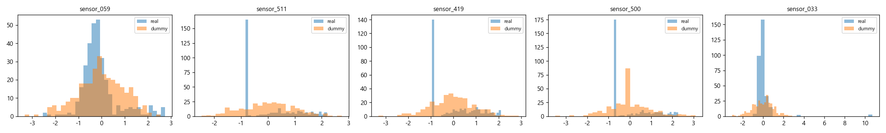
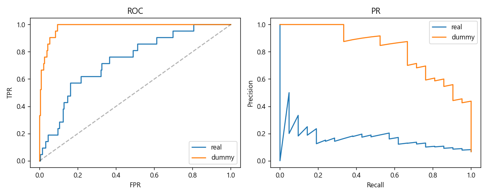

| source | rows | features | missing_rate | fail_rate |
|---|---|---|---|---|
| real | 314 | 248 | 0.0000 | 0.0669 |
| dummy | 314 | 591 | 0.0000 | 0.0669 |

| source | roc_auc | pr_auc | mcc_default | mcc_opt | f1_opt | best_threshold |
|---|---|---|---|---|---|---|
| real | 0.7396 | 0.1813 | 0.1388 | 0.2629 | 0.3000 | 0.0311 |
| dummy | 0.9818 | 0.8229 | 0.6834 | 0.6302 | 0.6087 | 0.0308 |

겹침 0/10
공통: (없음)
real만: ['sensor_033', 'sensor_059', 'sensor_129', 'sensor_197', 'sensor_205', 'sensor_213', 'sensor_419', 'sensor_486', 'sensor_500', 'sensor_511']
dummy만: ['sensor_003', 'sensor_017', 'sensor_042', 'sensor_056', 'sensor_140', 'sensor_146', 'sensor_184', 'sensor_308', 'sensor_488', 'sensor_533']
실데이터 ROC-AUC = 0.740, 더미 = 0.982 (Δ -0.242)
SHAP Top 10 겹침: 0%